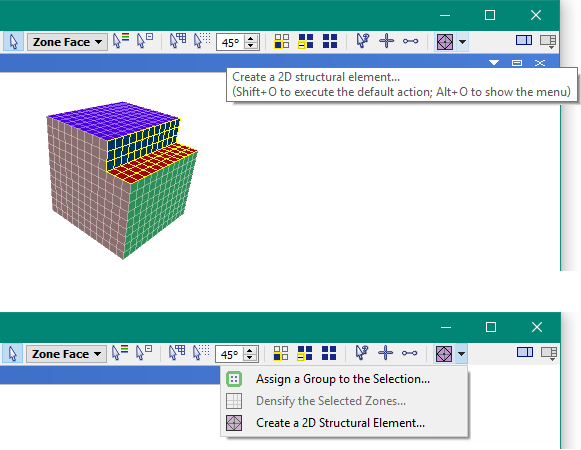
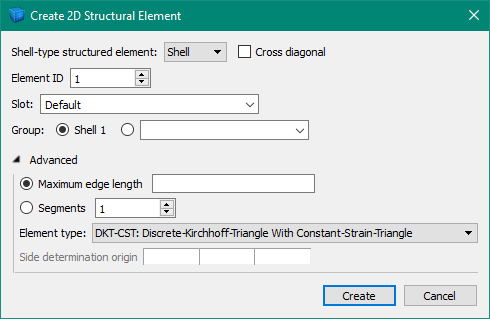

创建 2D 结构单元
在模型窗格工具按钮列表的末尾，有一个附带菜单的工具按钮。该菜单包含用于创建 2D 结构单元的命令。仅当选中一个或多个面时才启用。


在模型窗格中选中网格单元面后，可以选择“创建 2D 结构单元…”命令（ ），显示一个对话框，在其中可以选择单元类型并设置一些参数。
），显示一个对话框，在其中可以选择单元类型并设置一些参数。
请注意，此对话框实现了 structure shell create by-face、structure liner create by-face 和 structure geogrid create by-face 命令。
可以在当前所选面上创建新的 2D 结构单元。可在对话框中输入要创建哪些单元以及控制其创建的参数。


“壳型结构单元：”选择决定要创建目前可用的三种 2D 结构单元类型中的哪一种——壳、衬砌或土工格栅。
若勾选“交叉对角线”，则将在每个四边形面上使用在形心处创建的节点创建四个三角形单元；否则，将在每个四边形面上沿一条对角线创建两个三角形单元。
若勾选“衬砌”结构单元，则“分离”选项将可用。这将使所选的内部面在两个新表面之间创建衬砌单元之前被自动分离。
“单元 ID”指定用于标识结构单元组的标识编号——具有相同标识编号的单元在创建时将共享节点。
“槽位”决定创建时分配给单元的组将使用什么槽位名称。
“分组”决定创建时将分配给单元的组名（位于上方的槽位中）。有一个将被分配的默认组名，但您可以覆盖它。
在高级部分中，可以选择“最大边长”；这将自动细分所创建的单元，直到其边长小于给定值。或者，可以选择大于 1 的“分段数”值，使每个单元在创建时沿边被细分该次数。一般来说，使用与网格单元面尺寸相同的单元就足够了。
您也可以选择用于实现该单元的有限元类型。详细说明请参阅 壳有限元（Shell Finite Elements）。一般来说，附着在网格单元面上的单元应使用默认的 DKT-CST 单元类型。
最后，如果要发生内部面的分离，您可以选择为哪个面指定唯一的分组名称并用于创建单元。一般来说，对于衬砌这没有任何区别。此选择通过一个原点来完成——在与原点相反的一侧选取一个种子面，然后选择后续各面以保持该侧一致。
| 这些内容对您有帮助吗？… | FLAC3D © 2019, Itasca | 原文更新于 2020 年 10 月 8 日 |